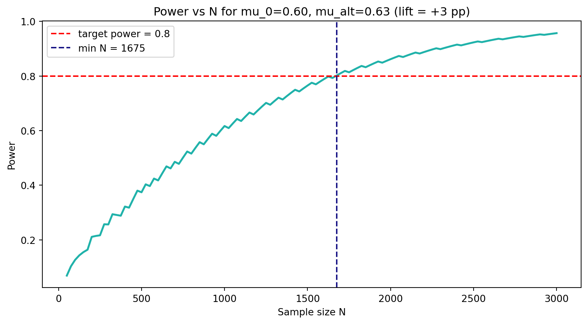

import warnings
warnings.filterwarnings("ignore")
import numpy as np
import matplotlib.pyplot as plt
from scipy.stats import binom
np.random.seed(73)
turquoise = "#20B2AA"
red = "#fb6107"
blue = "#181485"
gray = "#A0A0A0"Practice 2
Building our own binom.test for an A/B experiment
What we are doing today
In the lecture we built the individual bricks one by one: the critical region, the \(p\)-value, power, MDE, and the confidence interval. Today we assemble them into a single tool — our own my_binom_test() function, in spirit similar to R’s binom.test() or scipy.stats.binomtest. In each version we add one new capability and immediately try it out on a continuous business case.
1 The case: mobile-game onboarding
We work on PixelQuest, a mobile puzzle game. The product team has redesigned the tutorial: it is shorter and ends with a small in-game reward. Before rolling it out to all new players, we want to confirm that it actually lifts completion.
- Unit of observation: one new player after the first launch.
- Success metric: the player finished the tutorial (1) or not (0).
- Model: \(Q \sim \text{Binomial}(N, \mu)\) — a sum of \(N\) Bernoulli trials.
- Baseline: \(\mu_0 = 0.60\) (3 months of historical data).
- Business MDE: an effect smaller than +3 pp is not worth the engineering cost of shipping the new tutorial.
- Direction of interest: only \(\mu > \mu_0\) → one-sided test.
- Significance level: \(\alpha = 0.05\).
2 Version 1 — \(p\)-value only
The simplest version: given \(n\), \(\mu_0\), and the observed \(q\), return the one-sided \(p\)-value for \(H_1: \mu > \mu_0\).
\[ p\text{-value} = P(Q \geq q \mid \mu_0) = 1 - F_{\text{Binom}(n, \mu_0)}(q-1) \]
def my_binom_test(q, n, mu0=0.5):
"""
Version 1. One-sided binomial test for H1: mu > mu0.
Parameters
----------
q : number of successes in the sample
n : sample size
mu0 : probability of success under H0
Returns
-------
p-value (number in [0, 1])
"""
return 1 - binom.cdf(q - 1, n, mu0)Let’s try it on our case. Suppose 100 players entered the experiment and 66 of them finished the tutorial.
p_val = my_binom_test(q=66, n=100, mu0=0.60)
print(f"p-value = {p_val:.4f}")p-value = 0.1303\(p > 0.05\) — not enough evidence. This does not mean there is no effect; it means that on 100 players we would not have detected it reliably even if it existed. We will come back to this in the section about power.
3 Version 2 — three types of alternative
The business team sometimes wants to check “did anything change at all” (two-sided), and the anti-fraud team wants to check “did the metric drop” (one-sided less). Let’s add an alternative parameter.
def my_binom_test(q, n, mu0=0.5, alternative="greater"):
"""
Version 2. Adds an `alternative` parameter.
alternative : {"greater", "less", "two-sided"}
"greater" → H1: mu > mu0
"less" → H1: mu < mu0
"two-sided" → H1: mu != mu0
"""
p_right = 1 - binom.cdf(q - 1, n, mu0) # P(Q >= q)
p_left = binom.cdf(q, n, mu0) # P(Q <= q)
if alternative == "greater":
return p_right
if alternative == "less":
return p_left
if alternative == "two-sided":
return min(1.0, 2 * min(p_left, p_right))
raise ValueError(f"Unknown alternative: {alternative!r}")for alt in ("greater", "less", "two-sided"):
p = my_binom_test(q=66, n=100, mu0=0.60, alternative=alt)
print(f"alternative={alt:>10s} → p-value = {p:.4f}")alternative= greater → p-value = 0.1303
alternative= less → p-value = 0.9087
alternative= two-sided → p-value = 0.2607Notice: for the same data the one-sided \(p\)-value is half the two-sided one. That is exactly why product A/B tests usually go one-sided — we do not “pay” for a tail we do not care about.
4 Version 3 — confidence interval via test inversion
Now we add what the business actually wants — a confidence interval for \(\mu\). We build it the same way as in the lecture: sweep a grid of \(\mu_0\) values and collect those that the test does not reject.
def my_binom_test(q, n, mu0=0.5, alternative="greater",
alpha=0.05, conf_int=False, grid_step=0.001):
"""
Version 3. Adds conf_int=True → also returns a CI for mu.
If conf_int=False → returns just the p-value (as before).
If conf_int=True → returns a dict with p_value, ci_low, ci_high.
"""
p_right = 1 - binom.cdf(q - 1, n, mu0)
p_left = binom.cdf(q, n, mu0)
if alternative == "greater":
p_value = p_right
elif alternative == "less":
p_value = p_left
elif alternative == "two-sided":
p_value = min(1.0, 2 * min(p_left, p_right))
else:
raise ValueError(f"Unknown alternative: {alternative!r}")
if not conf_int:
return p_value
# Inverting the test: collect all mu values that are NOT rejected
mu_grid = np.arange(0, 1 + 1e-9, grid_step)
accepted = []
for mu in mu_grid:
pr = 1 - binom.cdf(q - 1, n, mu)
pl = binom.cdf(q, n, mu)
if alternative == "greater":
p_at_mu = pr
elif alternative == "less":
p_at_mu = pl
else:
p_at_mu = min(1.0, 2 * min(pl, pr))
if p_at_mu > alpha:
accepted.append(mu)
ci_low = min(accepted) if accepted else None
ci_high = max(accepted) if accepted else None
return {"p_value": p_value, "ci_low": ci_low, "ci_high": ci_high}Run it for our 100-player experiment:
result = my_binom_test(q=66, n=100, mu0=0.60,
alternative="two-sided",
alpha=0.05, conf_int=True)
print(f"p-value: {result['p_value']:.4f}")
print(f"95% CI for mu: [{result['ci_low']:.3f}, {result['ci_high']:.3f}]")p-value: 0.2607
95% CI for mu: [0.559, 0.751]Now the one-sided lower bound (the one usually shown on dashboards):
res_g = my_binom_test(q=66, n=100, mu0=0.60,
alternative="greater",
alpha=0.05, conf_int=True)
print(f"95% lower bound for mu (one-sided): {res_g['ci_low']:.3f}")
print(f"Upper bound: {res_g['ci_high']:.3f} ← always 1, not informative")95% lower bound for mu (one-sided): 0.575
Upper bound: 1.000 ← always 1, not informative5 Version 4 — a separate power function
Power answers a different question and is not a result of the experiment. So let’s make a dedicated my_binom_power() that our test can use.
\[ \text{Power}(N, \mu_0, \mu_{alt}, \alpha) = P(\text{reject } H_0 \mid \mu = \mu_{alt}) \]
def my_binom_power(n, mu0, mu_alt, alpha=0.05, alternative="greater"):
"""
Power of the one-sided or two-sided binomial test.
We compute it "from the other side": assume the true mu equals mu_alt
and ask --- with what probability does our test reject H0.
"""
if alternative == "greater":
c = int(binom.ppf(1 - alpha, n, mu0)) + 1 # reject if Q >= c
return 1 - binom.cdf(c - 1, n, mu_alt)
if alternative == "less":
c = int(binom.ppf(alpha, n, mu0)) - 1 # reject if Q <= c
return binom.cdf(c, n, mu_alt)
if alternative == "two-sided":
c_low = int(binom.ppf(alpha / 2, n, mu0)) - 1
c_high = int(binom.ppf(1 - alpha / 2, n, mu0)) + 1
return binom.cdf(c_low, n, mu_alt) + (1 - binom.cdf(c_high - 1, n, mu_alt))
raise ValueError(f"Unknown alternative: {alternative!r}")Check it for our case:
for n in (100, 500, 1000, 2000):
pw = my_binom_power(n=n, mu0=0.60, mu_alt=0.63, alpha=0.05, alternative="greater")
print(f"N = {n:>4d} → power = {pw:.3f}")N = 100 → power = 0.127
N = 500 → power = 0.374
N = 1000 → power = 0.617
N = 2000 → power = 0.862At \(N=100\) power is about \(0.2\): even if the new tutorial really is +3 pp better, we would detect it in only 1 experiment out of 5. This is not statistics’ fault — the sample is simply too small.
Code
n_grid = np.arange(50, 3001, 25)
power = np.array([my_binom_power(n, 0.60, 0.63, 0.05, "greater") for n in n_grid])
min_n = n_grid[power >= 0.8].min()
fig, ax = plt.subplots(figsize=(10, 5))
ax.plot(n_grid, power, color=turquoise, linewidth=2)
ax.axhline(0.8, linestyle="--", color="red", label="target power = 0.8")
ax.axvline(min_n, linestyle="--", color=blue, label=f"min N = {min_n}")
ax.set_xlabel("Sample size N")
ax.set_ylabel("Power")
ax.set_title("Power vs N for mu_0=0.60, mu_alt=0.63 (lift = +3 pp)")
ax.legend()
plt.show()
6 Version 5 — MDE and required sample size
Two mirror-image planning questions. Let’s make one function with two modes.
def plan_experiment(mu0, alpha=0.05, target_power=0.8,
alternative="greater",
n=None, mde=None,
n_max=50000, n_step=10):
"""
Planning helper.
Pass EXACTLY ONE of:
n → returns the MDE at this n (min. effect with target_power)
mde → returns the minimum n needed to detect the effect mde
Parameters
----------
mu0 : baseline value of the metric
alpha : significance level
target_power : target power (default 0.8)
alternative : "greater" / "less" / "two-sided"
mde : effect in absolute units (e.g. 0.03 = +3 pp)
"""
if (n is None) == (mde is None):
raise ValueError("Pass exactly one of: n or mde")
if n is not None:
# Search MDE on a grid of delta
delta_grid = np.linspace(0, 1 - mu0 - 1e-9, 1000)
powers = np.array([
my_binom_power(n, mu0, mu0 + d, alpha, alternative)
for d in delta_grid
])
fit = delta_grid[powers >= target_power]
return float(fit[0]) if len(fit) else None
# Search for minimum n
mu_alt = mu0 + mde if alternative == "greater" else mu0 - mde
for n_try in range(10, n_max + 1, n_step):
if my_binom_power(n_try, mu0, mu_alt, alpha, alternative) >= target_power:
return n_try
return NoneScenario A: marketing says they can deliver 500 new players. What effect can we detect?
mde_500 = plan_experiment(mu0=0.60, n=500, alternative="greater")
print(f"MDE at N=500: +{mde_500*100:.2f} pp (i.e. mu_alt ≥ {0.60+mde_500:.3f})")MDE at N=500: +5.53 pp (i.e. mu_alt ≥ 0.655)Scenario B: the product manager says that an effect smaller than +3 pp is not worth shipping. How many players do we need?
n_needed = plan_experiment(mu0=0.60, mde=0.03, alternative="greater")
print(f"Players needed to detect +3 pp: {n_needed}")Players needed to detect +3 pp: 16307 Version 6 — the final my_binom_test
We collect everything into one easy-to-read result, similar to R’s binom.test(). We also add a point estimate and a readable summary.
def my_binom_test(q, n, mu0=0.5,
alternative="greater",
alpha=0.05,
conf_int=True,
mu_alt=None,
grid_step=0.001):
"""
Final version: a complete one-sample binomial test.
Returns a dict:
- estimate : q/n
- p_value : p-value of the test
- reject : True/False (p_value <= alpha)
- ci : (ci_low, ci_high) at level 1 - alpha
- power_at_alt : power at mu_alt (if provided)
- mde_at_n : MDE at this n
- summary : text string with the verdict
"""
# p-value (logic from version 2)
p_right = 1 - binom.cdf(q - 1, n, mu0)
p_left = binom.cdf(q, n, mu0)
if alternative == "greater":
p_value = p_right
elif alternative == "less":
p_value = p_left
elif alternative == "two-sided":
p_value = min(1.0, 2 * min(p_left, p_right))
else:
raise ValueError(f"Unknown alternative: {alternative!r}")
# CI via inversion (logic from version 3)
ci = (None, None)
if conf_int:
mu_grid = np.arange(0, 1 + 1e-9, grid_step)
accepted = []
for mu in mu_grid:
pr = 1 - binom.cdf(q - 1, n, mu)
pl = binom.cdf(q, n, mu)
if alternative == "greater":
pv = pr
elif alternative == "less":
pv = pl
else:
pv = min(1.0, 2 * min(pl, pr))
if pv > alpha:
accepted.append(mu)
if accepted:
ci = (min(accepted), max(accepted))
# Power and MDE (from versions 4-5)
power_at_alt = None
if mu_alt is not None:
power_at_alt = my_binom_power(n, mu0, mu_alt, alpha, alternative)
mde_at_n = plan_experiment(mu0=mu0, n=n, alpha=alpha,
target_power=0.8, alternative=alternative)
# Summary
decision = "REJECT H0" if p_value <= alpha else "do not reject H0"
summary = (
f"n={n}, q={q}, mu_hat={q/n:.3f}\n"
f"H0: mu = {mu0} vs H1: mu {'>' if alternative=='greater' else ('<' if alternative=='less' else '!=')} {mu0}\n"
f"p-value = {p_value:.4f} (alpha = {alpha}) → {decision}\n"
f"{int((1-alpha)*100)}% CI for mu: [{ci[0]:.3f}, {ci[1]:.3f}]\n"
f"MDE at n={n}, power=0.8: +{mde_at_n*100:.2f} pp"
)
if power_at_alt is not None:
summary += f"\nPower at mu_alt={mu_alt}: {power_at_alt:.3f}"
return {
"estimate": q / n,
"p_value": p_value,
"reject": p_value <= alpha,
"ci": ci,
"power_at_alt": power_at_alt,
"mde_at_n": mde_at_n,
"summary": summary,
}8 The full experiment cycle
Now let’s walk through the experiment “the way it happens at work”: first planning, then a simulated launch, then a report.
8.1 Step 1. Planning
mu0 = 0.60
business_mde = 0.03 # +3 pp -- the smallest interesting effect
alpha = 0.05
target_power = 0.8
N = plan_experiment(mu0=mu0, mde=business_mde,
alpha=alpha, target_power=target_power,
alternative="greater")
print(f"Plan: run the test on N = {N} players")
print(f" (min detectable effect = +{business_mde*100:.0f} pp, power = {target_power})")Plan: run the test on N = 1630 players
(min detectable effect = +3 pp, power = 0.8)8.2 Step 2. Simulated launch
We simulate a reality where the new tutorial truly lifts completion to \(0.635\) (a value unknown to the analyst in advance).
np.random.seed(2026)
latent_mu = 0.635
sample = binom.rvs(1, latent_mu, size=N)
q = int(sample.sum())
print(f"Observed: q = {q} completions out of {N} (mu_hat = {q/N:.3f})")Observed: q = 1022 completions out of 1630 (mu_hat = 0.627)8.3 Step 3. Analysis
result = my_binom_test(
q=q, n=N, mu0=mu0,
alternative="greater",
alpha=alpha,
conf_int=True,
mu_alt=mu0 + business_mde,
)
print(result["summary"])n=1630, q=1022, mu_hat=0.627
H0: mu = 0.6 vs H1: mu > 0.6
p-value = 0.0137 (alpha = 0.05) → REJECT H0
95% CI for mu: [0.607, 1.000]
MDE at n=1630, power=0.8: +3.00 pp
Power at mu_alt=0.63: 0.8008.4 Step 4. Stakeholder report
Summary of the new-tutorial A/B test
- Observed conversion: 62.7% (baseline 60.0%).
- One-sided 95% lower bound: np.float64(60.7)%.
- Test at \(\alpha=0.05\): reject H0 - evidence of a lift ($p = $ np.float64(0.0137)).
- Expected power of the plan for a +3 pp effect: np.float64(0.8).
Recommendation: if the lower CI bound exceeds the 63% business threshold — ship it. Otherwise — iterate on the design or keep collecting data.
9 Pitfalls of interpretation
Pre-launch self-check
If the answer to any of these is “no” — it is too early to launch.